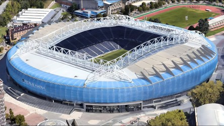

Treinador: Pellegrino Matarazzo
Pellegrino Matarazzo é uma das figuras mais singulares do panorama técnico atual, destacando-se pela sua trajetória pouco convencional e pelo seu perfil intelectual. Com uma formação académica em Matemática Aplicada pela Universidade de Columbia, o norte-americano traz para o futebol uma mentalidade analítica e estruturada
Estádio: Anoeta
O Estádio Anoeta, localizado em San Sebastián, é o orgulho da Real Sociedad e um dos recintos mais modernos e esteticamente elogiados da Europa.

Estilo de Jogo:
Desde a sua chegada à Real Sociedad em dezembro de 2025, o treinador norte-americano Pellegrino Matarazzo implementou um estilo de jogo focado na revitalização da competitividade da equipa através de uma abordagem tática flexível e de alta intensidade.
"Aurrera Reala!"